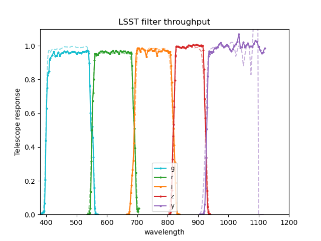

Recherche
Instruments, traitement des données, et les systématiques qui les séparent de la cosmologie.
Ma recherche se situe à l’interface entre instrumentation astronomique, traitement des données et analyse scientifique. Des relevés comme LSST produisent d’énormes volumes de données, mais en tirer des résultats fiables demande de comprendre la réponse de l’instrument, les systématiques d’observation et les performances réelles des méthodes d’analyse. Je travaille sur toute cette chaîne, des données instrumentales aux logiciels de production et aux analyses scientifiques, avec des outils validés quantitativement sur des données réelles et simulées.
Ma thèse s’est déroulée au sein de l’équipe de calibration de l’observatoire Rubin et de la collaboration LSST Dark Energy Science Collaboration (DESC). Elle couvre trois thèmes.
Étalonnage photométrique avec le Collimated Beam Projector
Les supernovae de type Ia sont une sonde essentielle pour la cosmologie avec LSST, et les utiliser comme chandelles standard avec la précision requise impose d’étalonner très finement la réponse photométrique du télescope. Le Collimated Beam Projector (CBP) est un instrument installé dans le dôme, qui projette directement dans l’ouverture du télescope Simonyi des sources ponctuelles artificielles collimatées et monochromatiques, de flux et de longueur d’onde connus. Il s’affranchit ainsi des systématiques atmosphériques et de lumière parasite qui limitent les étalonnages par champ plat et par étoiles standard.
L’essentiel de ma thèse est consacré au CBP de l’observatoire Rubin, avec pour objectif de caractériser la réponse photométrique du plan focal de LSSTCam au niveau sub-pour-mille.
- Chaîne d’analyse complèteUn pipeline complet de réduction des données du CBP, intégré au framework Data Management de Rubin : retrait de la signature instrumentale, détection des spots, soustraction du fond en deux dimensions et photométrie d’ouverture sur le plan focal de 189 CCD. Il préserve les variations de réponse d’un détecteur à l’autre, que les corrections de champ plat n’éliminent pas.
- Rendement quantique des détecteursRendement quantique relatif des détecteurs de LSSTCam entre 300 et 1100 nm, à partir de jeux de données pris à plusieurs positions du miroir, avec des écarts systématiques sub-pourcent par rapport aux courbes mesurées en laboratoire entre 400 et 860 nm.
- Transmission des filtresLa première mesure in situ de cinq des six profils de transmission des filtres larges de LSST dans le télescope entièrement assemblé, et une première quantification du décalage des bords de bande avec l’angle d’incidence (effet de décalage vers le bleu), de plusieurs nanomètres.
- Répétabilité et systématiquesDes mesures répétées dans des conditions identiques s’accordent à mieux que le pour-mille : la chaîne de suivi du CBP contribue donc de façon négligeable au budget d’incertitude de l’étalonnage. La comparaison de différentes configurations donne aussi une estimation directe des non-uniformités de transmission et des biais liés au fond.

Systématiques de relevé et masquage des étoiles brillantes
Les étoiles brillantes au premier plan peuvent créer de fausses détections et biaiser la photométrie des galaxies, surtout dans l’environnement dense des amas. Pour y remédier, j’ai développé un logiciel qui génère automatiquement des masques autour des étoiles brillantes, pour les simulations LSST comme pour les données réelles, avec une méthode inspirée du relevé HSC-SSP.
La méthode a été validée dans le cadre de la validation de l’algorithme WaZP, et elle est utilisée dans Rubin DESC, y compris pour les premières analyses de la Data Preview 1 de LSST, comme l’étude en cours de l’amas de galaxies Abell 360.

Amas de galaxies
J’ai contribué à la validation et à l’optimisation de l’algorithme de détection d’amas AMICO sur les simulations LSST DC2. J’ai caractérisé sa complétude et sa pureté en fonction du décalage vers le rouge et de la masse des halos, et amorcé des études de prévisions de comptages d’amas à partir de l’estimation de la fonction de sélection. Ensemble, ces travaux rendent les catalogues d’amas plus robustes comme sondes cosmologiques de précision.
Mots-clés : observatoire Rubin et LSST, étalonnage photométrique, Collimated Beam Projector, systématiques de relevé, masquage des étoiles brillantes, amas de galaxies, LSST DESC, chaînes de traitement de données. Articles et présentations sont sur les pages publications et CV.